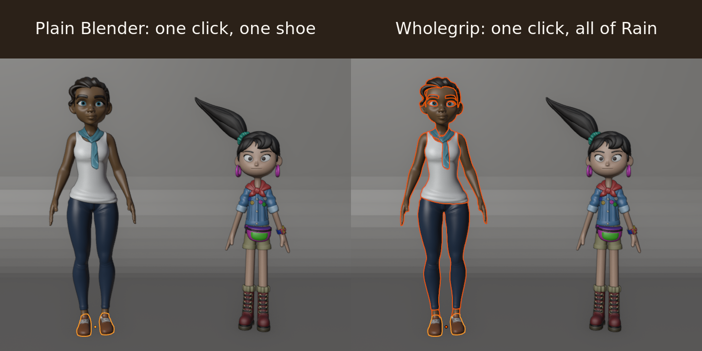
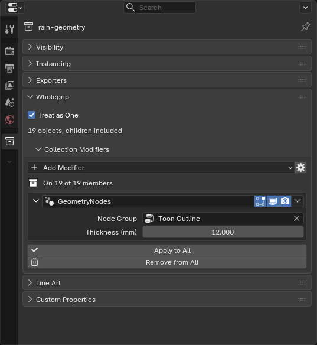
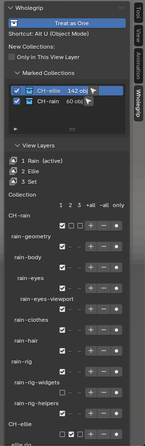

Wholegrip for Blender
Stop selecting every piece individually, adding the same modifier to dozens of objects and going into every view layer by hand: Wholegrip makes a collection you already have work like one object.

- Click any part, get the whole thing, child collections included.
- Add a modifier once, and every part keeps it in step, even parts added later.
- Every view layer in one click, from the Outliner's own menu.
$12 once, every future version included. No subscription, no licence key, no account.
Tested on Blender 4.2.23, 4.5.15, 5.0.1, 5.1.2 and 5.2.3 (Linux); Windows and macOS not tested yet · GPL source included · support@ochrestack.com · 14-day refund · details
Watch it work

The scope in full
Blender's Select Grouped > Collection (Shift+G) selects the active object's collection; group-select add-ons exist too, built on Empties, instances or their own group data. Copy Modifiers (Ctrl+L) and right-click > Copy to Selected copy a modifier or a value once to the selected parts; they don't keep the parts in step, and a part added later gets nothing. Blender's Outliner excludes a collection in the active view layer only. With Wholegrip you pay for four things: it works on the collections already in your file, with no Empties, instances or group objects, and only on the collections you mark; the modifier stack follows the collection's membership, Geometry Nodes inputs included; the view-layer entries sit in the Outliner's own View Layer menu, with a default for new collections; and it is one tool for Blender 4.2 LTS to 5.2 LTS.
Click selection

How selection works
- Mark a collection in the Outliner (right-click > Treat as One) or with the checkbox in Collection Properties. Collections you don't mark behave as in plain Blender.
- Click, box drag (Select Box tool or B) and Shift+click take whole collections; the clicked part stays active.
- Ctrl+click picks one object, as Blender's own Ctrl+click does (the object whose origin is nearest the cursor). Alt+U or the Wholegrip header button turns it all off and on.
- When a part is in two marked collections, the deepest one wins and the status bar names the other.

One modifier stack per collection

How the stack works
- Change a value, rename, reorder, or toggle viewport and render in the panel, and every member follows. Remove it and it goes from every member.
- Parts moved into the collection get the stack; parts moved out lose it. Each part's own modifiers stay, and vertex-group fields stay per object.
- Geometry Nodes: the node group and its input values stay in step.
- Apply to All and Remove from All ask first, and Ctrl+Z undoes them.
- The copies are ordinary modifiers, so the file opens and renders the same without the add-on. A collection with collection modifiers also gets one hidden helper object,
.Wholegrip stack <name>, linked to no scene. No Empties, instances or group objects.


Every view layer at once

The menu, the sidebar tab and the options
- Include in All View Layers, Exclude from All View Layers and Only in This View Layer act on every selected collection.
- If a parent collection is excluded in some layer, Wholegrip leaves the parent alone and names that layer in the status bar.
- An option, off by default, makes new collections start in the active view layer only.


Limits
No group pivot or shared Edit Mode; modifiers only; include and exclude only; one scene at a time.
Every limit
- It doesn't expose single properties of objects inside a linked or instanced collection, and it never edits linked or library-overridden data.
- Moving a selected collection uses Blender's own multi-object transform. Nested groups follow one rule: the deepest marked collection wins.
- No constraints or materials are kept in step. Lights, cameras and empties get no modifiers.
- Not holdout, indirect only or viewport hide across view layers.
- Circle and Lasso selection stay plain Blender. No export. English only.
- A copy edited directly on one part keeps that edit until the next change made in the panel.
How we tested
| Blender (official Linux builds) | Automated tests (headless) | Window tests | Review findings re-checked with real input |
|---|---|---|---|
| 4.2.23 LTS | 112 passed, 0 failed | 8 passed | 3 of 3 |
| 4.5.15 LTS | 112 passed, 0 failed | 8 passed | 3 of 3 |
| 5.0.1 | 112 passed, 0 failed | 8 passed | 3 of 3 |
| 5.1.2 | 112 passed, 0 failed | 8 passed | 3 of 3 |
| 5.2.3 LTS | 112 passed, 0 failed | 8 passed | 3 of 3 |
More on testing, and on these pictures
Wholegrip 1.0.2, 9 November 2026. Every panel, button, menu entry, checkbox and shortcut is also driven with real mouse and keyboard input in a full Blender window, with a screenshot of each step: 53 of 53 steps passed on Blender 5.2.3 and on 4.2.23 with 1.0.2, five typed Geometry Nodes edits in a row among them. On 2,000 objects in 200 marked collections, a click selection took 0.048 s and one value change on a 50-member stack 0.018 s (Blender 5.2.3, measured on 1.0.1). Version 1.0.2 fixes a crash on repeated Geometry Nodes edits in the Collection Modifiers panel, found while capturing the pictures on this page; the fix has its own tests. Windows and macOS have not been tested yet.
The pictures are real captures of the full Blender 5.2.3 window on a virtual display, driven by real mouse and keyboard input, with Wholegrip installed from the same zip you download. We put the two characters side by side, lowered their arms, switched on Rain's own viewport eyes, and built the studio backdrop and the outline node group.
Rain Rig (CC) Blender Foundation | studio.blender.org; Ellie (CC) Blender Foundation | studio.blender.org; CC BY 4.0. Not included with Wholegrip.
Details
- Buying: download by email after checkout; 14-day refund if it doesn't work as described. Studio, up to 10 people: $48, email us.
- Privacy: no network calls, no telemetry, no licence check.
- Install: Install from Disk in Blender's Get Extensions; see the quick start.
- Support: support@ochrestack.com
$12 once · source included · tested on Linux; Windows and macOS not yet